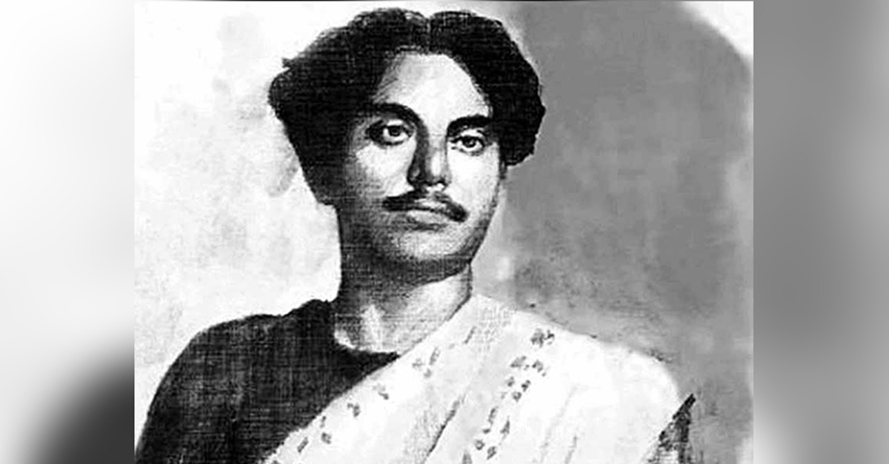

Kazi Nazrul Islam
National poet of Bangladesh

Kazi Nazrul Islam
Here's a timeline of Kazi Nazrul Islam
-
1899 - Kazi Nazrul Islam born at the village of Churulia in the
district of Burdwan, West Bengal, India.
- 1908 - Nazrul's father dies at the age of 60.
-
1909 - Passes the Muslim lower primary education examination in a
maktab.
-
1910 - Discontinues formal schooling due to financial hardship.
Earns his livelihood as a teacher at a maktab, muazzin (a caller for
prayer at a mosque), and a custodian of the village shrine, etc.
-
1911 - Joins a 'leto' group (folk musical troupe) with the
encouragement and help from his uncle, Kazi Bazle Karim, a
singer-song-writer- composer, himself a 'Goda Kobi' (the leading poet)
of his troupe.
-
1911 - Studies at Mathrun Nabinchandra Institution (Class VI).
-
1912 - Works in the household of a railway guard, in a bakery
shop, etc
-
1913-14 - Meets Kazi Rafizullah, a police sub-inspector, who
arranges for Nazrul to study free of charge at Darirampur High School in
Mymensingh.
-
1915-17 - Admitted to Searsol Raj High School in Raniganj,
Burdwan, in Class VIII. Kazi Manzoor Hussain, a distant relative, helped
making the arrangements for free schooling and accommodation.
-
1919 - First publication, Bounduler Atma-kahini (Life Story of a
Vagabond), a short story, in Saogat magazine, 1st year, 7th issue, in
Calcutta, Mohammad Nasiruddin, editor.
-
1920 - Returns to Calcutta, first staying in the same hostel with
Shailajananda Mukhopadhyaya, then in a rented apartment with Comrade
Muzaffar Ahmad.
- 1926 - The family moves to Krishnanagar.
-
1927 - Comes to Dhaka to attend and speak at the annual
conference of the Muslim Sahitya Samaj.
-
1931 - Travels to Darjeeling, accompanied by Barshabani editor,
Jahanara Chowdhury; meets with Tagore.
-
1936 - Presides over the Faridpur Muslim Students Conference.
-
1945 - Calcutta University awards Nazrul the "Jagattarini Gold
Medal."
-
1960 - Awarded the "Padmabhushan" title by the Government of
India.
-
1971 - Bangladesh's liberation war against Pakistan's colonial
rule begins in the face of planned genocide of the Bengalis.
-
1972 - Nazrul brought to Bangladesh under a state arrangement,
accompanied by Uma Kazi, the wife of his son Kazi Sabyasachi.
-
1975 - Dhaka University confers an honorary D. Lit on Nazrul.
-
1976 - Bangladesh citizenship conferred on Nazrul. August 29,
Sunday, 10 am Nazrul dies in P G Hospital in Dhaka. Buried in Dhaka.
“দূর আজানের মধুর ধ্বনি, বাজে, বাজে মসজিদের-ই মিনারে। মনেতে জাগে, হাজার বছর
আগে, হজরত বেলালের অনুরাগে। তার খাস এলাহান, মাতাইতো প্রাণ। ভাঙ্গাইতো পাষান,
জাগাইতো মহিমারে। দূর আজানের মধুর ধ্বনি, বাজে, বাজে মসজিদের-ই মিনারে”
-- Kazi Nazrul Islam
If you have time, tou should read more about this incredible human being
on his
Wikipedia entry.